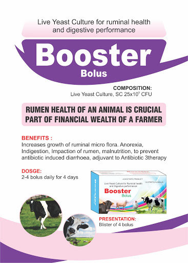

Composition
Each bolus contains:
Prebiotics, Probiotics, Vitamins, Minerals & Amino Acids premix.
Indication
♣ Help to maintain an ideal microfloral balance
♣ Enhance weight gain and feed efficiency
♣ Increase milk and meat production
♣ Improvement of animal feed palatability
♣ Increase absorption rate and improve FCR value
♣ Improve intestinal health
♣ Effective against Salmonellosis, Colibacillosis,
♣ Necrotic enteritis & Staphylococcosis etc.
♣ Increase feed intake and salivary secretion
♣ Reduce metabolic stress
♣ Increase bacterial fermentation to digest roughage
Dosage & administration
Cow, Horse & Buffalo: 2 bolus per day.
Calf, Goat and sheep: 1 bolus per day.
Poultry: 1 bolus for 5-10 adult birds.
Pack Size
30 bolus in plastic pot.
Storage
Store in a cool & dry place protected from light.
Keep out of the reach of children